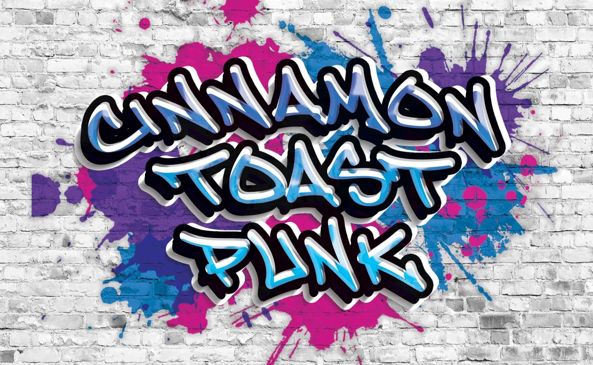
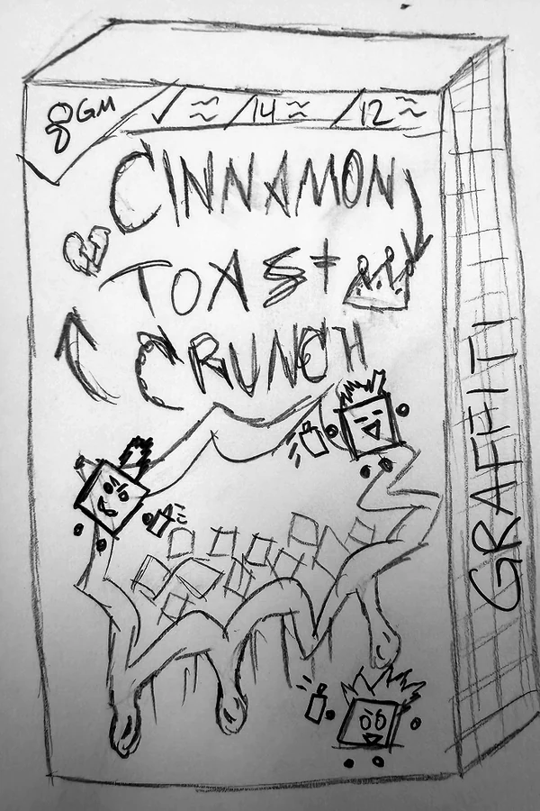
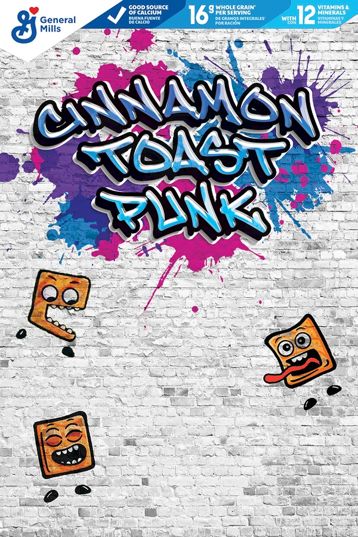
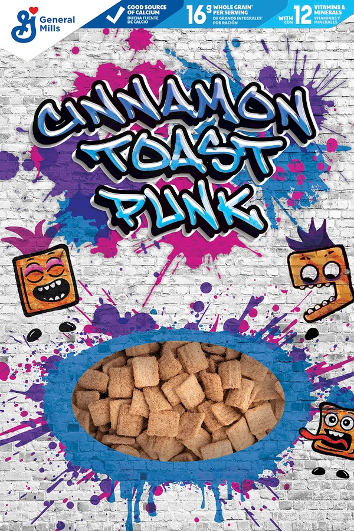
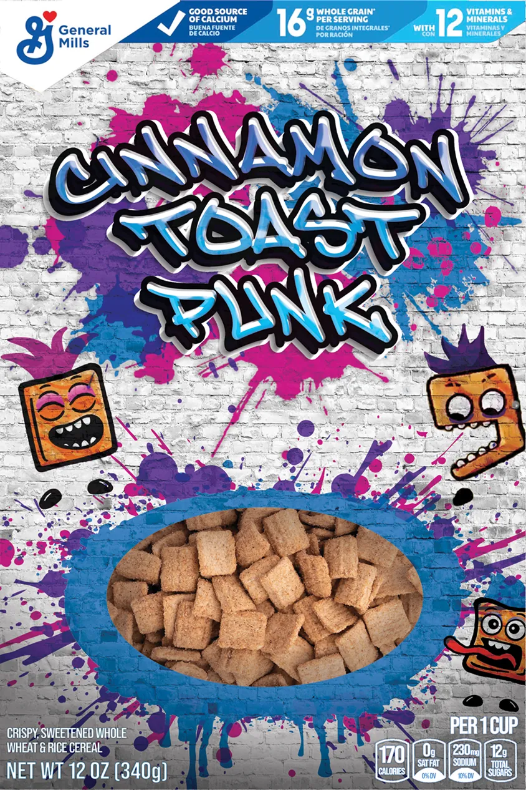
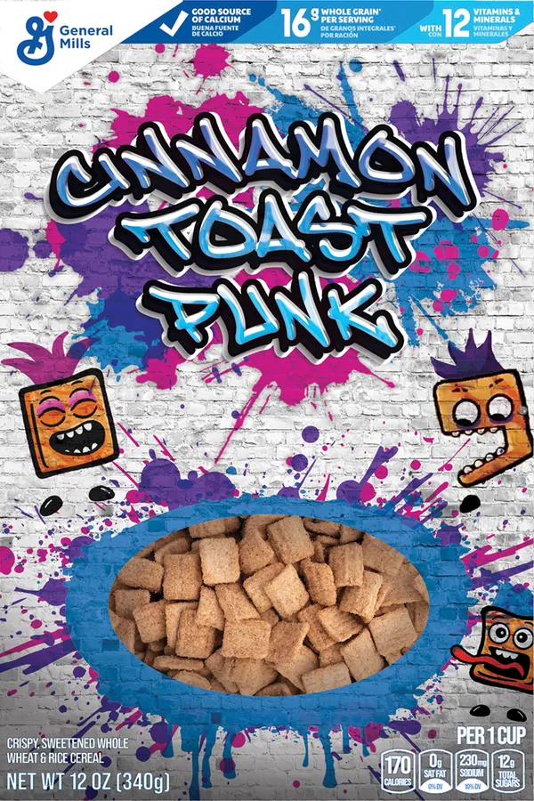
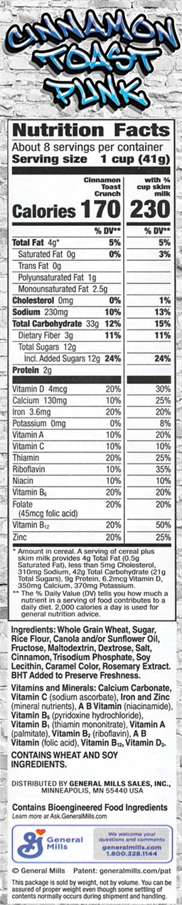
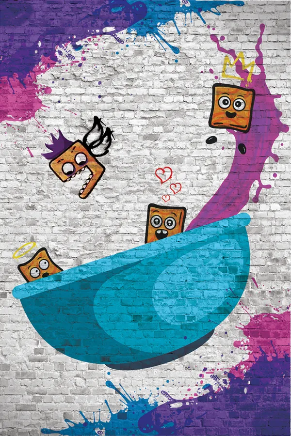
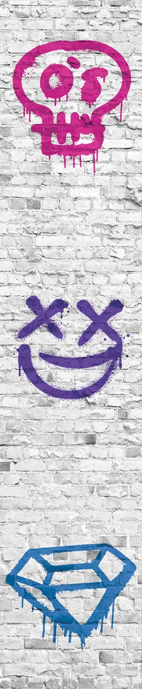
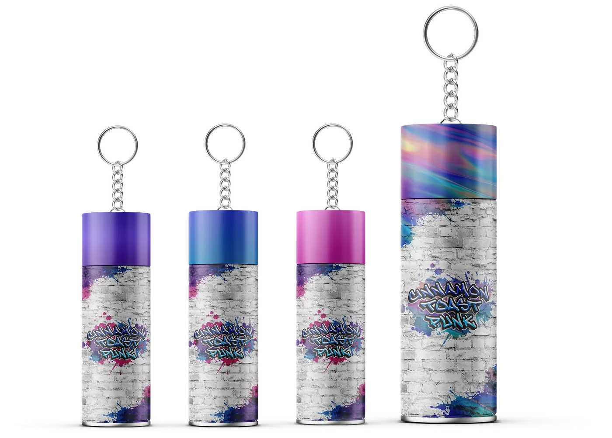

Graphic / Packaging design
Cinnamon Toast Punk
A familiar cereal. A louder personality.
A punk-inspired reimagining of Cinnamon Toast Crunch, from expressive packaging to a spray-can collectible. The cereal stays recognizable while the attitude changes.
Solo ARTD 251 project, special-edition concept
- My role
- Concept, identity, illustration & packaging
- Timeline
- [add project dates and duration]
- Tools
- [add illustration, packaging, and mockup tools]

Overview
The brief
Reimagine an existing cereal as a special edition. Cinnamon Toast Crunch’s current box is playful and family friendly, built on colorful swirls, bold type, and the “cinnamilk” swirl. The redesign had to keep that recognition and give it a new personality.
The concept
The brand already calls itself crazy. Cinnamon Toast Punk takes that word somewhere rebellious: graffiti, spray paint, and punk energy on a cereal box, about breaking the rules and starting the day loud.
Three goals
- Build an edgy, street-art look from vibrant color and graffiti forms.
- Position the cereal as the snack for chaotic, adventurous people, not just for kids.
- Keep the brand’s mischief recognizable while speaking to an older, trend-conscious buyer.
Who it’s for
Gen Z, pre-teens, and young adults drawn to bold visuals and self-expression, plus collectors chasing every Cinnamon Toast Crunch box or building a graffiti and punk collection.
Sketches
The cover went through four rounds, from a pencil sketch to the final box. Each round answered the feedback from the one before.
-

Initial sketch
Set the idea: a street-art box that still reads as cereal. Feedback was direct: try other graffiti styles, rethink the cutout’s shape and size, find a better brick background, and commit to one color scheme.
-

First draft
Added the main logo, the blue, pink, and purple scheme, paint splatter, the Cinnamojis, and a nutrition label across the top.
-

Second draft
Made the Cinnamojis more punk to fit the theme and cut a “hole in the wall” to show the cereal, ringed in paint splatter.
-
Final
One system carried around every side of the box, so the back and sides work as hard as the front.
The box in 3D
Each side of the box carries one design decision: type, layout, illustration, and color.

-

Front Typography
A loud title that stays legible.
The graffiti title is the first thing you see, with a subtle blue gradient so it pops without turning into noise. Four typefaces split the work: Nerko One, Sedgwick Ave Display, Knewave, and Ruslan Display.
-

Nutrition side Layout
Every side follows one system.
The graffiti logo tops this panel so the side still belongs to the box. The nutrition facts stay in the standard black-and-white format, so they read as quickly as on any other cereal.
-

Back Illustration
Restyle the Cinnamojis, don’t replace them.
They’re how people spot the brand, so they keep their wild faces and gain punk style. One in a crown rides the paint splash into the bowl, one stares in awe under little hearts, and Chomp eyes the one relaxing in the bowl.
-

Stencil side Color
Three colors, not a pile.
Early drafts used too many colors. Narrowing to neon blue, pink, and purple, tied together with paint splatter, gave the box a scheme. Each stencil here takes one of the three, inspired by street artists’ tags.
Drag to turn the box.
The collectible
The special edition comes with a spray-can keychain, so the box’s graffiti look leaves the cereal aisle as a small accessory.

One can for each color
Blue, pink, and purple, the same three colors as the box, so every can reads as part of the set.
One in a thousand
An ultra rare chromatic can with a gradient finish turns up in 1 of every 1,000 boxes, adding excitement and making the set worth collecting.
Outcome & reflection
What was delivered
The box design, its full dieline, mockups, and the spray-can keychain collectible. [add final critique or production feedback]
The hardest part
Creative blocks. I’d finish a design and dislike it right away. Asking peers and friends for feedback was the most reliable way out.
What I learned
Stick with one idea instead of drifting, plan the work so there’s time to change course, and design the sides of a box to work together.
What comes next
More sketching up front, so there are more ideas to draw from before committing to a direction.
Project context & draft notes
Summarized from Sebastian Vega’s ARTD 251 Final Presentation.
Bracketed prompts identify information still to confirm. Labeled visual spaces reserve the intended image proportions; original project assets remain saved.